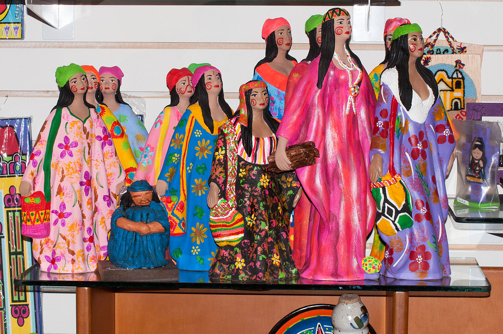
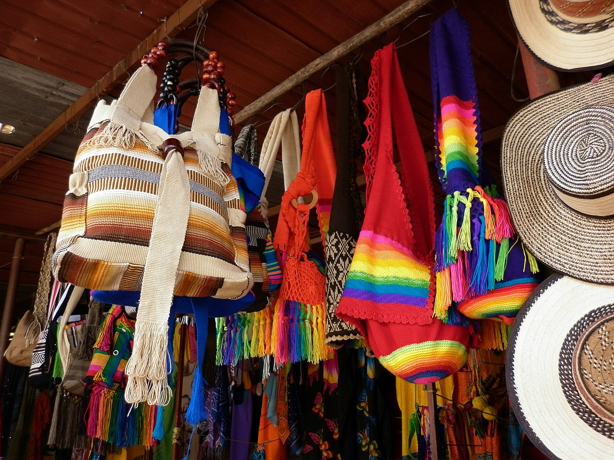

La rica cultura y tradición en Venezuela también se ven representadas en diversas obras culturales,
como pinturas, escultura, exposiciones y otras expresiones artísticas como es la música y la poesía, también las artesanías
son consideradas reliquias culturales de Venezuela ya que guardan muchos años de conocimientos y diversas técnicas que fueron
mezcladas entre las tradicionales indígenas y autóctonas de Venezuela junto con las técnicas de la inmensa variedad de inmigrantes
que llegaron a Venezuela desde diversas partes del mundo.

Dichas artesanías son realizadas en diferentes materiales, generalmente los mismos son materiales extraídos de la
naturaleza o materias primas nobles, como es el caso de la cerámica, una de las más usadas para elaborar las artesanías venezolanas,
también las tintas o pinturas en su época más remota habían sido elaboradas de una forma muy natural, mezclando flores y extractos naturales,
hasta llegar a darle el colorido típico que las artesanías venezolanas poseen.
En estos tiempos, si visitamos Venezuela podemos encontrar muchas artesanías desde pinturas en lienzo, pinturas en vidrio,
la técnica importada desde España de papel maché en las cuales se construyeron muchas figuras religiosas, y el barro, actualmente son muchos
son artesanos que evocan las antiguas basijas indígenas, con formas de cacharros, ollas, con diferentes motivos o figuras geométricas de colores
muy fuertes, característicos de los países caribeños, que le genera la artesanía un toque muy especial, dándole mayor vida y volumen a la pieza
cerámica.

Con el paso de los años se han formado diversos talleres de artesanía en Venezuela, y de esta manera también se han adquirido
otros materiales, como es el retrovidro, un trabajo sobre vidrio en donde se pinta el mismo y además se le da volumen con diversas técnicas,
también los aglomerados de madera, o madera compensada, o también virutas o chips de madera prensados son utilizados como base para pintar cuadros,
o diseñar objetos con los cuales posteriormente se los pinta con figuras orgánicas muy coloridas.